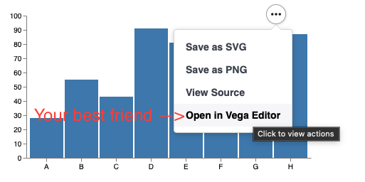

Working with a chart
We'll want to manipulate the underlaying JSON specification, we'll need a Seq[ujson.Value => Unit], and the vega-lite example line chart.
As always... lean into vega;

Ultimately, our aim might be to plot a line chart with our own data, for example with this datastructure
import java.time.LocalDate
case class TimeSeries(series: Seq[(LocalDate, Double)])
val ts = TimeSeries(
Seq(
(LocalDate.of(2021,1,1), 0.2),
(LocalDate.of(2021,6,1), 20),
(LocalDate.now(), 5.5),
)
)
// ts: TimeSeries = TimeSeries(
// series = List((2021-01-01, 0.2), (2021-06-01, 20.0), (2022-04-04, 5.5))
// )Adding a title
To start simple, let's add a title modifier.
I'm writing out the types here in the hopes of being helpful. It looks harder than it is... After you've done it twice it gets easy.
import viz.vega.plots.LineChartLite
import viz.Utils
val addTitle : ujson.Value => Unit =
(spec:ujson.Value) => spec("title") = "A Timeseries"
// addTitle: Function1[Value, Unit] = repl.MdocSession$App0$$Lambda$14703/575462432@3aa60c6c
LineChartLite(
Seq(
addTitle,
Utils.fixDefaultDataUrl
)
)
// res1: LineChartLite = LineChartLite(
// mods = List(
// repl.MdocSession$App0$$Lambda$14703/575462432@3aa60c6c,
// Fix default data url
// )
// )But there are a couple of things which are messy about our modification; 1. We've hardcoded the title 2. the anonymous function display is very anonymous.
Let's have another go. With a little more ceremony, we have something that looks reasonable afterwards.
Better title modifier
def addTitleB(in:String): ujson.Value => Unit = new((ujson.Value => Unit)) {
override def toString = s"set title to be $in"
def apply(spec: ujson.Value) = spec("title") = in
}
LineChartLite(Seq(addTitleB("Much better"), Utils.fixDefaultDataUrl ))
// res3: LineChartLite = LineChartLite(
// mods = List(set title to be Much better, Fix default data url)
// )At this point, i think it's clear how we're going to deal with piping in the data - the same way as we injected a title
Piping in the data
def addData(in: TimeSeries) = new (ujson.Value => Unit) {
override def toString = "pipe in data"
def apply(spec: ujson.Value) =
val data = in.series.sortBy(_._1)
.map(
point =>
ujson.Obj(
"date" -> point._1.toString(),
"price" -> point._2
)
)
spec("data") = ujson.Obj("values" -> data)
spec.obj.remove("transform")
}
LineChartLite(Seq(addTitleB("Now with data"), addData(ts) ))
// res5: LineChartLite = LineChartLite(
// mods = List(set title to be Now with data, pipe in data)
// )Generally, I find that the best "workflow", is to pump the data into the spec and plot it. It usually shows up blank. Open it up in the vega editor and fix it. It's then easy to backport the modification into scala.
Conclusion
There's nothing that says
- Your plot can't be a method defined on some Timeseries class itself. That's an obvious and trivial next step.
- You have to own the data structure - have a look at the example on the homepage. That works through an extension method defined on
Numeric[Iterable]
Which means you can "interface" plotting on datatypes of interest to you. I found this to be a powerful idea